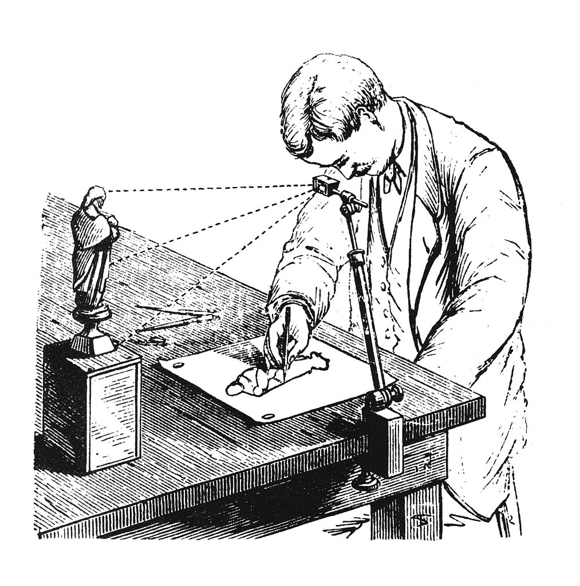
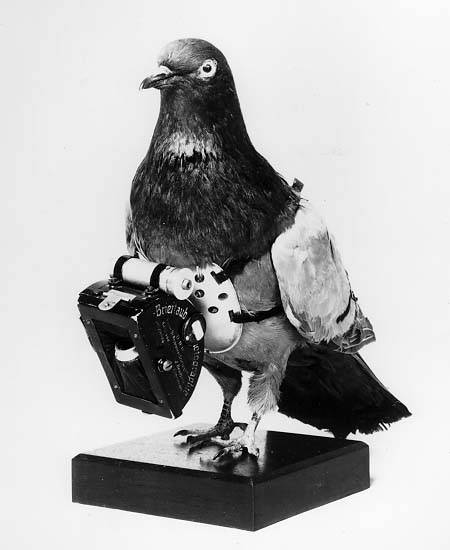
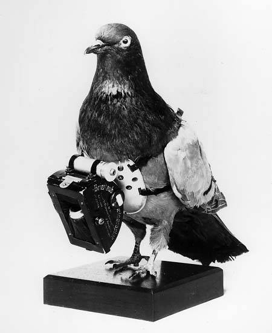
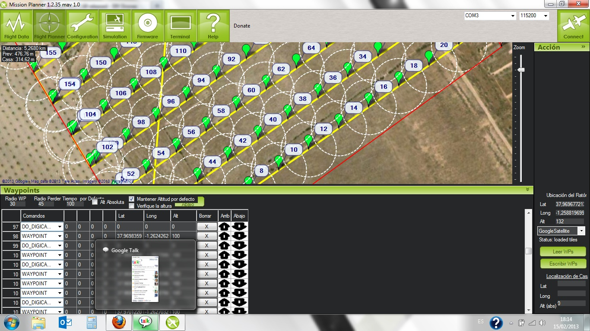
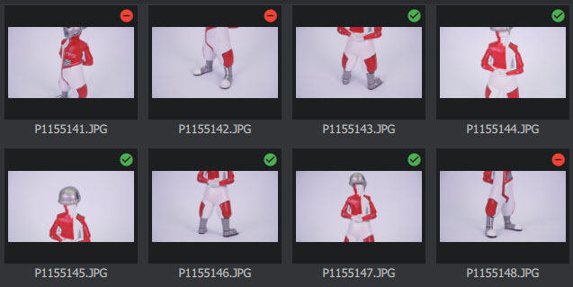
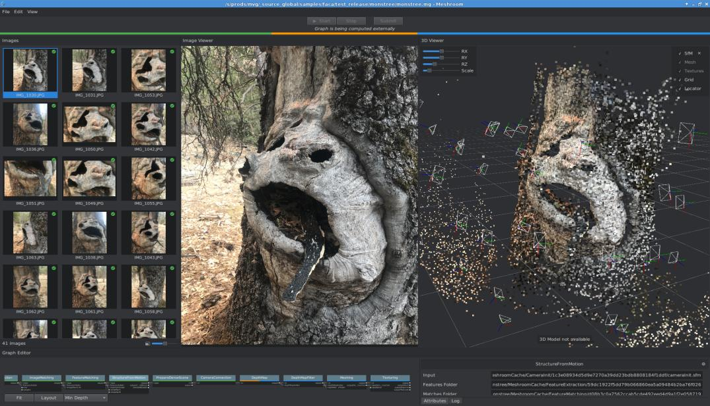
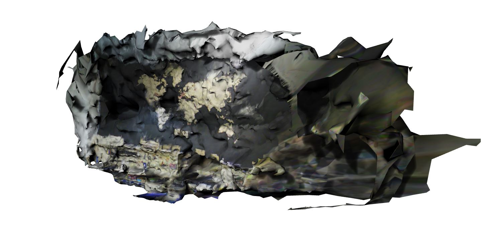
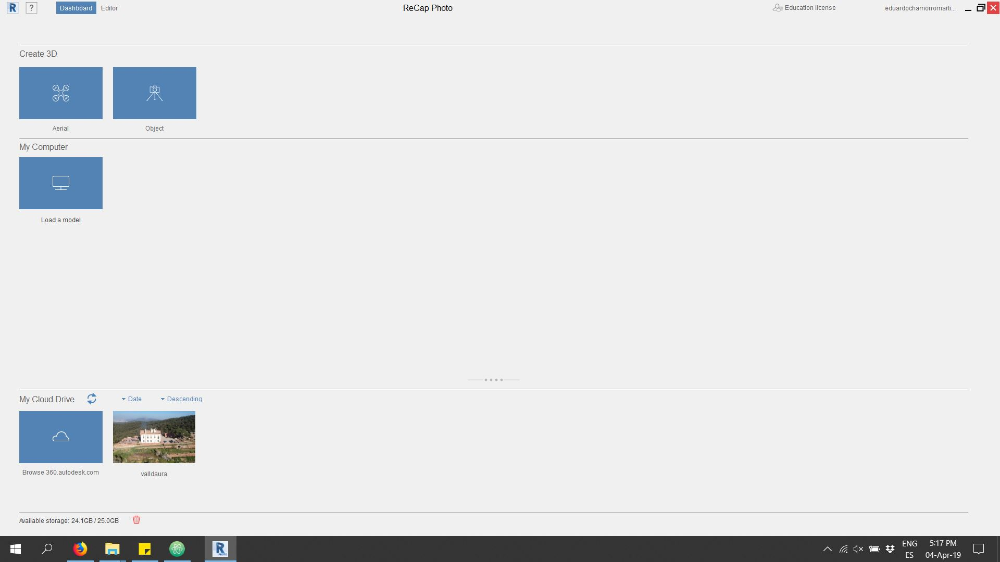
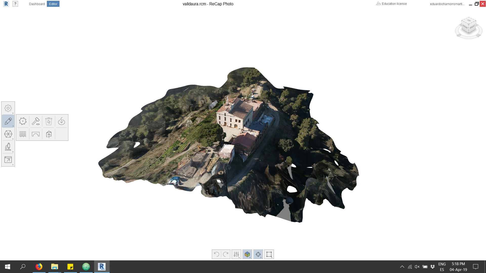
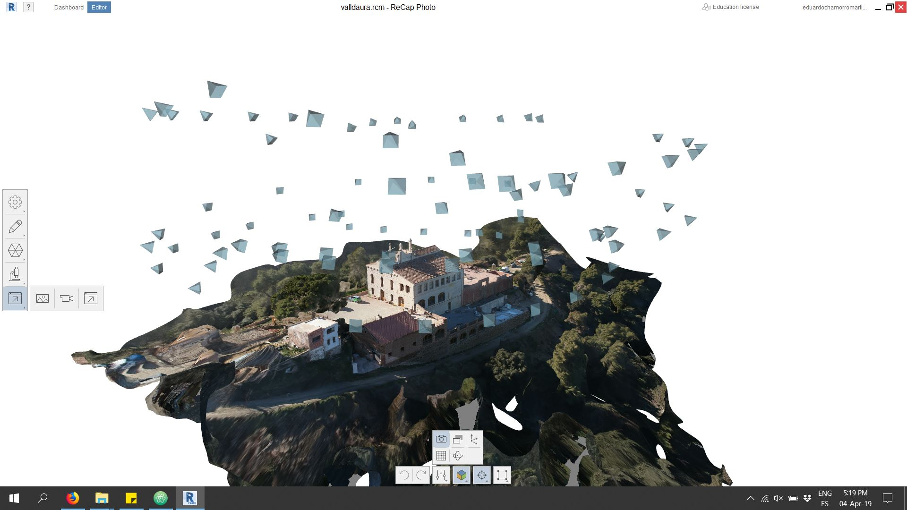

AERIAL PHOTOGRAMMETRY
Spanish VersionCONTENT
AERIAL PHOTOGRAPHY
We will learn to take data through drones, plan missions, checks and capture techniques
Reconstruction software
We will use different photogrammetry software to process the captured data.
Data processing
Post-processing of the generated models, analysis and extraction of conclusions.
PHOTOGRAMMETRY
Definition
Technique to obtain maps and plans of large areas of land through aerial photography.
500 BC
Camera obscura (500 BC in China, 350 BC Aristote, 1000 Al-Haytham, 1500 Léonard de Vinci)

~1500
Leonardo Da Vinci tries to determine the painter's point of view from the perspective of painting.

~1600
Camera lucida (patented by Wollaston in 1806)
1793
Beautemps-Beaupré, hydrography: maps of shorelines during expeditions from angular and distance measurements

1826
Niépce, First photography

1836
Daguerreotype - "gift to the world" from the French Academy

1911
Scheimpflug, first aerial photogrammetry, rectified photographs.
 

Emergence of Mathematical Solutions
-
3D pose problem
- 1615 - Snellius
- 1773 - Lagrange
- 1841 - Grunert
-
Epipolar geometry
- 1862 - Terrero
- 1883 - Hauck
- 1899 - Finsterwalder
-
Trifocal geometry
- 1883 - Hauck
-
Motion estimation
- 1880 - Schroter: 4 point problem for coplanar object points
- 1913 - Kruppa: 5 point problem
- 2003 - Nister: first algorithm for the 5 point problem that gives at most 10 solutions
-
3D modeling from a single image
- ~1800 - Laussedat
- 1883 - Hauck
- 1892 - Meydenbauer
-
3D reconstruction from uncalibrated images & projective reconstruction
- 1883 - Hauck
- 1899 - Finsterwalder
-
Camera self-calibration
- 1892 - Meydenbauer
- 1899 - Finsterwalder
FOTOGRAFIA AEREA
Definition
Analysis of the Earth's surface by using photographic machines installed on board various aerial media.
The process consists of the flight and capture of photographs in the first place.
These images are then processed using specific programs to obtain 3D and Orthomosaic models.With this type of program, it is possible to obtain an accuracy of up to 1 centimeter in planimetry thanks to the inclusion, as we have commented in the example, of support points taken by GNSS topographic. The obtained orthomosaics can reach up to 1 centimeter of GSD (Ground Sample Distance), that is, one pixel of the generated image represents a square of 1 centimeter on each side in reality. Ideal specifications.
Safety
- The security of the surveyor, the most notable advantage. Before, the surveyor needed to be able to take material collection points, so he had to ascend to the highest level of this, travel a steep slope to be able to represent it, etc. with the possibility of slipping or with the unfortunate result of sinking into storage.
Efficiency
- Through the drone flight you can get millions of colored points; whereas before, the surveyor had to observe point by point, obtaining only coordinates in which he could hardly achieve 500 points per day.
Visual value
- The possibility of having a graphic document with a history is born in which the progress can be seen as a possible guarantee for future claims or simply for a visual analysis. In this way, it is possible to visually compare the quantity of material that has changed in a warehouse.
Immediacy
- It is possible to reduce the processing time and, therefore, the labor costs decrease. Years ago, photogrammetric flights using planes specifically adapted to this job gave delivery times of approximately 1 month. Through a drone flight and taking support points, this time is reduced to days.
Restrictions
- It is limited by the law in force in Spain. Currently this distance is marked 500m away from the takeoff point for a BVLOS flight for a drone between 2 and 25kg.
Altura
- The maximum height. As in the previous point, the maximum height is limited in Spain to 120 meters.
HOW TO TAKE THE DATA
We must make a linear or orbital flight around the model to rebuild

Steps to follow
- FLIGHT PLANNING
- TOPOGRAPHIC SUPPORT


Steps to follow
- FLIGHT PERFORMANCE
- PROCESSING AND CALCULATION


TYPE OF DATA COLLECTION
It is necessary to establish a strategy adapted to each model to be reconstructed
Plan the flightMULTIPOSITION
Es necesario que las imagenes tomadas tengan distintos angulos de toma y perspectiva entre ellas para asi poder reconstruir una superficie no bidimensional.
REFERENCED
Al superponer fotografias en distintas posiciones los softwares de reconstrucion puede cuadrar matrices de puntos de referencia para asi ubicar primero donde fueron tomadas las fotografias y luego comenzar la reconstruccion.
OVERLAP
Es recomendable que las fotografia se solapen en la imagen tomada al menos un 20-30% siendo recomendable hasta un 60%.
DOME SHOT
Used when there is a main element to rebuild but still maintains interest in the surroundings.
CYLINDRICAL SHOT
Used in small-scale models or in high-rise towers.
ORBITAL SHOT
Utilizada cuando existe un elemento principal en la composicion y se pretende la mayor definicion de este y no su entorno.

SWEPT
Typology used with the double sweep to obtain models of great precision and detail
EXTENSION SHOT
Mainly used in agriculture for crop control, it is usually done with flying wing type drones as they give greater autonomy
ZIGZAG SHOT
This type of intake is usually the most used in manual flights and small extension since it allows great overlap while maintaining simple trajectories
DJI - DRONE CONTROL
Flight programming of
Mavic-MiniEASY AREAL PLATFORM
SIMPLIFIED CONTROLS
With the smartphone we can see our flight route, coordinates and different recording options.
LET´S USE IT
Turn on the drone and the controller connected to the smartphone and start the DJI-FLY application
FIRMWARE UPDATES
Always install the latest updates as they include important flight improvements
CONFIGURATIONS
The configuration menu is in the upper right corner
CONFIGURATIONS
With the safety settings we adjust the maximum distance and height it can reach and the automatic return height.
CONFIGURATIONS
Recommended to fly in position or in cinemasoth (slowly) if the place to fly has many obstacles.
CONFIGURATIONS
In image adjustments we will choose the 4: 3 ratio since it gives us more vertical and is the original ratio of the camera sensor
CONFIGURATIONS
In advanced settings we will choose to show a video gang to allow us to better frame the images.
CONFIGURATIONS
Always before flying we must check that our broadcast channel is free of interference or we risk easily losing the connection and control of the drone.
FLIGHT
The controls on the left side are all automatisms such as the automatic takeoff, where the drone rises up to 1.5m high
FLIGHT
In the visual interface in the lower left corner we will see a map if we double click on it, it will be displayed allowing us to observe the map
FLIGHT
Here we can observe dangerous or prohibited flight zones and the trajectory that the drone is making.
FLIGHT
Here we can observe dangerous or prohibited flight zones and the trajectory that the drone is making.

FLIGHT
On the left side there are also the buttons for landing and return to the automatic take-off point

CAMERA SETTINGS
On the right side we have the option to choose between photography and video
CAMERA SETTINGS
During the flight you can choose between photo with timer or in manual mode
CAMERA SETTINGS
It is very important to choose the correct lighting and lock the exposure control whenever possible.
OPEN CONTROL - MISSION PLANER
Flight program and open source programming
ArdupilotMULTIPOURPOSE
This software serves both to program drones, as well as to adjust them, create missions and see their location in real time
In the flight plan section we can establish our flight route, coordinate and what will be done in each position.

Depending on the place we must choose a different cartographic base, here we can see the comparison of gooogle maps vs bing maps
HOME
Establish a base point (home) that will serve as a reference and recovery.

Scanning area
Draw a polygon of what will be our area to scan.
AUTO WAYPOINT
Right button autowp and in this case we will use "survey".
Camera Menu
Adjust the camera used, overlap, height and type of route
WP´S EXPORT
Check the waypoints and save the file to the drone

RECONSTRUCTION
Definicion
Photogrammetric frame of artificial vision for 3D reconstruction and camera tracking.
Meshroom/AliceVision
Meshroom is a free open source photogrammetry software with a beautiful user interface. It is built on an underlying framework called AliceVision, which is the result of cooperation between multiple Universities and laboratories.
Meshroom DownloadSimple and intuitive interface

The basic interaction is as simple as possible. Drag and drop the images into the Meshroom window, press START and wait for the model to finish.
Two steps- Drag and Drop

Standard Reconstruction
Chances are, you use the standard reconstruction when processing photos taken previously outside, and you can't just take more of them. We assume that you have already taken all the necessary photos, arrived home and now want to rebuild the 3D model.
the workflow is very simple
- Copy all the images to a folder on your hard drive
- Drag and drop the folder (or individual images) into the Meshroom window
- Save the project using File - Save to a destination of your choice (otherwise the reconstruction will be stored in a temporary folder)
- Press Start or right-click the Structure From Motion (SFM) node and press Calculate
- Wait taking a coffee
If you notice that a significant number of images were discarded and the preview has only a few cameras, there is little point in continuing with the reconstruction.
After the complete rebuild is complete, you can double-click the Textured node to preview the final mesh.
You can right-click on any of the completed nodes and select Open Folder. Open the texture or filter mesh folder to find the output file in a commonly used Wavefront .obj format.
Autodesk Recap Photo
Autodesk recap is a photogrammetric reconstruction software that operates in the cloud, all calculations are done by Autodesk servers.
Autodesk ReCap Photo DownloadSimple and intuitive interface
It has a minimalist interface to make the whole process as transparent as possible to the user. It is only necessary to upload the photos to the server and in a few hours we will have the model ready
Voila! The already rebuilt model ready to upgrade and export

IMPROVEMENT
The first tool allows us to model the ¨mesh¨ as clay to make small corrections and fixes for elements that have not been properly reconstructed
The bottom menu allows us to change display styles, wireframe, texturing, camera locations and rendering types.
With untextured visualizations we can better correct model errors and observe and modify the plot density.

With the already exported and textured model we can work and analyze it on other platforms

Agisoft Photoscan
Agisoft PhotoScan is a professional photogrammetric reconstruction software, it gives a great final quality and integrates multiple post-processes.
Agisoft DownloadAgisoft Photoscan
INICIO
We proceed to load the photo bases "ADD CHUNK"
START
We proceed to attach the photographs taken "add photos"
First processed
We proceed to start the alignment of the photographs is a relatively fast process where the cameras are placed in space
Cameras aligned
If you have a large number of images (more than 100), we recommend to enable - Generic preselection option, to reduce processing time;
We do not recommend using parameters: Guided image matching, Adaptive camera model fitting;
For Key point limit the recommended range of 20 000 to 100 000;
For Tie point limit the recommended range of 2 000 to 40 000.
Cameras aligned
We can already see a basic mesh where the photographs have been placed and a basic point cloud

In this step we can eliminate the cameras that have not been located correctly or that bother us

After photo alignment is finished, refine bounding box position and orientation to fit the desired volume for reconstruction:
Point cloud calculation
The point cloud is a three-dimensional representation of points in which each point also includes texture. It is this step that determines the quality.

We recommend to use - Medium quality. Higher quality takes quite a long time and demands more computational resources, but allows for more detailed results generation. If the geometry of the scene to be reconstructed is complex with numerous small detail on the foreground, then it is recommended to set Mild depth filtering mode, for important features not to be sorted out).
Select Build Dense Cloud command from the Workflow menu. Set the following recommended values for the parameters in the Build Dense Cloud dialog:
Once this step is finished we can already see perfectly our model represented in points, many editors prefer to work with this format as it is more flexible and light
Points from the dense cloud can be removed with the help of selection tools and Delete/Crop instruments located on the Toolbar.
Mesh calculation
From the points we can create triangulated surfaces to represent "MESH" reality on surfaces.
After dense point cloud has been reconstructed it is possible to generate polygonal mesh model based on the dense cloud data or depth maps data. The second approach supports GPU-acceleration and mostly provides better results for the same depth maps quality for objects and scenes with big number of minor details.
Select Build Mesh command from the Workflow menu. Set the following recommended values for the parameters in the Build Mesh dialog:
This type of representation is what we commonly know as 3D and we can export it to multiple programs.
Build Texture
Usually the texture atlas size in range of 4000 - 10000 pixels is sufficient.
Export
 - POINT CLOUDS ONLINE
- POINT CLOUDS ONLINE - 3D Mesh models
GENERATED DATA
- Workpackage-TestModel-Agisoft
- All files
- Obj-Sample
- MTL-Sample
- Image-Sample
- Textures-Sample
- Displacement-Sample
- NormalMap-Sample
{kind=link}
{kind=link}
{kind=link}
{kind=link}
POST-PROCESSED
Definicion
Treatment of a series of data to extract models, conclusions or effects not obtained in the first place.
Data processing
Post-processing of the generated models, analysis and extraction of conclusions.
DATABASE - TO ANALYSIS
From the textured three-dimensional model (mesh or point cloud) we can extract multiple types of data and maps

Geometric data
We can do both area and volume analysis, characterizing both its geometry and its typology.
MEASUREMENTS
Measurements and distances over places with little or no information
Visualizations
Creation of photomontages or interactive videos from the reconstructed model or as a basis for situating interventions

Live data
Analysis of situations in emergency contexts for planning interventions
Estudios
Analysis of crops and vegetation

D-E-M
DIGITAL ELEVATION MAP ANALYSIS
DEM
DIGITAL ELEVATION MAP es una forma de representacion de nuestro modelo por altura en las cotas Z se cambian los colores de las texturas por colores de altura

ORTOMOSAIC
Photographic representation of an area of the earth's surface, in 2d
ORTOMOSAIC
As with DEM we can also extract an HD photographic composition of the model (Commonly known as google maps style).

Downloads
- Ceu Photographic Base
- Cloud Point Model
- Mesh Model
- PluginsGrasshopper fotogrametria
- Grasshopper Scripts
Plugin installation
Grasshopper plugins that do not come with an .exe file are installed manually.
- Let's go to File- special folders-ComponentFolder
- Open the special folder "Components Folder"
- Copy the plugin files into this folder
- Unlock each file by right-clicking it -> Properties
- Reopen Rhino and Grasshopper
Output-Data
Output-Data
MORE WORKSHOPS
En mi repositorio personal podéis encontrar mas manuales y guías sobre otros workshops